السلسلة 9
الشاحنة (صنف C) · 21 سؤال بالصوت. حاول تجاوب بوحدك، من بعد شوف الجواب.
السؤال 1
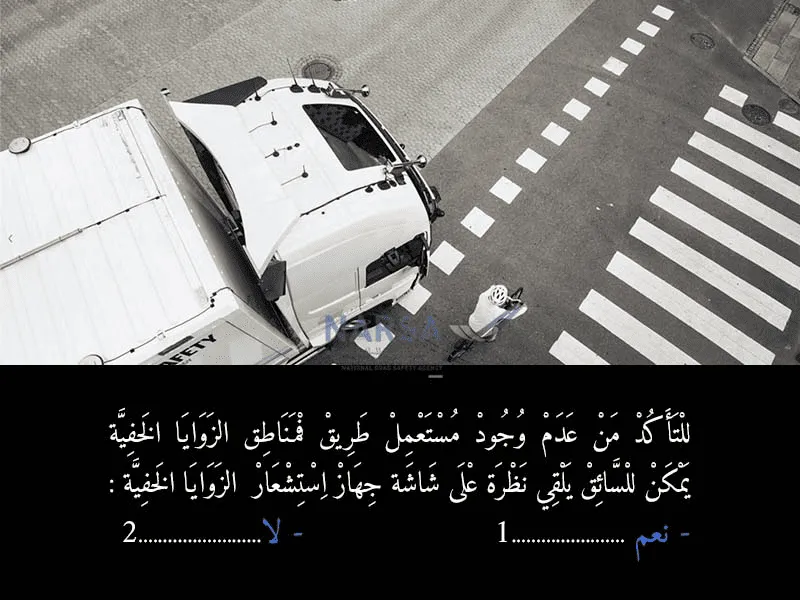
بيّن الجواب
الجواب الصحيح: 1
تم تطوير تقنيات لمساعدة السائقين. أحد هذه التقنيات هي أجهزة استشعار الزوايا المخفية (Blind Spot Monitoring Systems).
هذه الأنظمة تستخدم عادة رادارات أو كاميرات مثبتة على جوانب المركبة لمراقبة النقط العمياء. عندما يتم الكشف عن مركبة أخرى أو مستعمل طريق في هذه المناطق، يقوم النظام بتنبيه السائق. بعض الأنظمة تعرض هذه المعلومات على شاشة داخل قمرة القيادة، مما يسمح للسائق "بإلقاء نظرة على شاشة جهاز استشعار الزوايا المخفية" للتأكد من خلو تلك المناطق قبل تغيير المسار أو الانعطاف.
لذلك، فإن وجود شاشة تعرض معلومات من جهاز استشعار الزوايا المخفية هو بالفعل أداة حديثة وفعالة تساعد السائق على التأكد من عدم وجود أي مستعمل طريق في هذه المناطق الخطيرة. 🚛👀🚲
السؤال 2
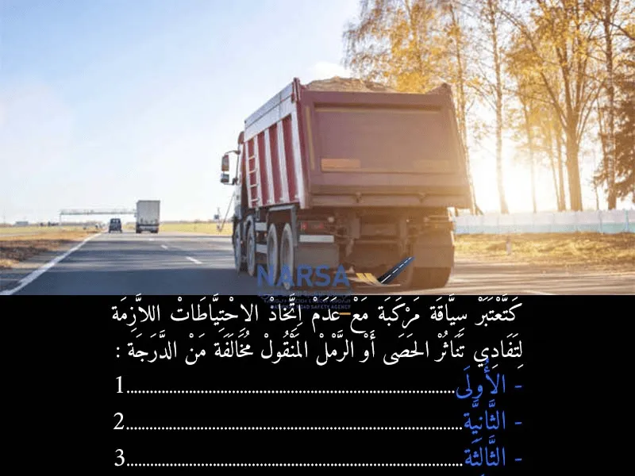
بيّن الجواب
الجواب الصحيح: 1
إن عدم اتخاذ الاحتياطات اللازمة لتغطية أو تثبيت الحمولة (مثل الحصى أو الرمل) بشكل يمنع تناثرها على الطريق، هو عمل خطير جداً. ⚠️ هذه المواد المتناثرة يمكن أن تسبب حوادث سير خطيرة 💥، أو تتلف المركبات الأخرى 🚗، أو تعيق الرؤية بشكل كبير 🌫️. لذلك، تعتبر هذه المخالفة من الدرجة الأولى في مدونة السير المغربية، مما يعني أنها تستوجب غرامة تصالحية وجزافية قدرها 700 درهم. 💲 تأمين الحمولة بإحكام ضروري جداً لسلامة الجميع وتجنب العقوبات المشددة! 👷♂️
السؤال 3
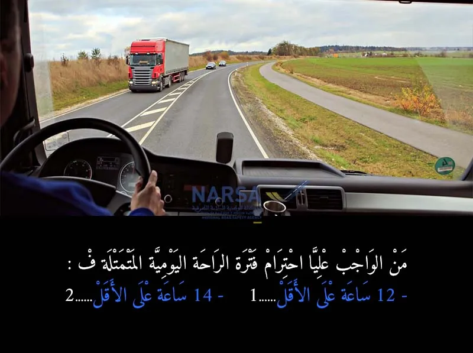
بيّن الجواب
الجواب الصحيح: 1
مدة الراحة اليومية:
يجب ألا تقل مدة الراحة اليومية للسائق عن 12 ساعة خلال كل فترة من 24 ساعة.
في حالة السياقة ضمن طاقم يجب على السائق الذي يشارك ضمن طاقم أن يكون قد أخذ مدة راحة يومية جديدة من 12 ساعة على الأقل خلال 30 ساعة.
السؤال 4
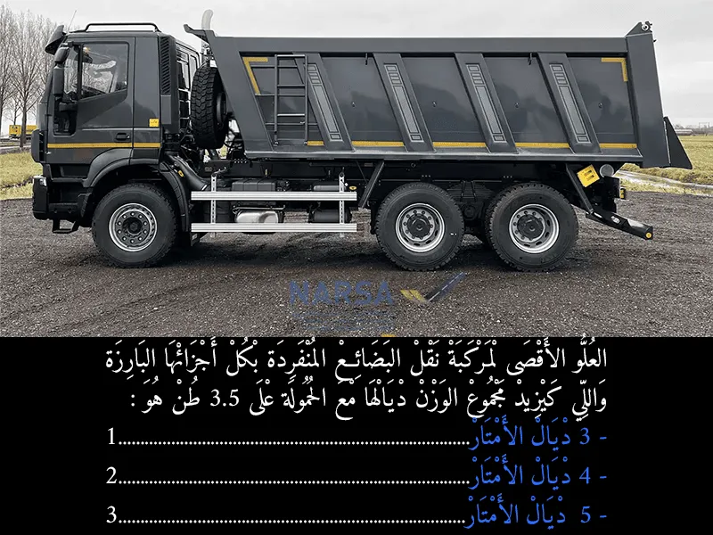
بيّن الجواب
الجواب الصحيح: 2
مركبة بمحرك (عربة منفردة) / الشاحنة والحافلة:
o الطول: 12 متر
o العرض: 2.55 متر
o الارتفاع: 4 متر
السؤال 5
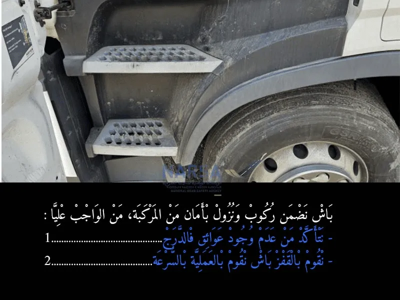
بيّن الجواب
الجواب الصحيح: 1
لضمان ركوب ونزول آمن من المركبة:
- تأكد من نظافة وخلو الدرج من العوائق. ✅ (باش ما تزلقش)
- لا تقفز! استخدم ثلاث نقط ارتكاز (يدين ورجل أو العكس) وانزل ببطء. 🛑 (باش تحافظ على توازنك وتتجنب الإصابات)
هذه الإجراءات ضرورية لتجنب السقوط والإصابات، خاصة في المركبات العالية مثل الشاحنات. 👷♂️👍
السؤال 6
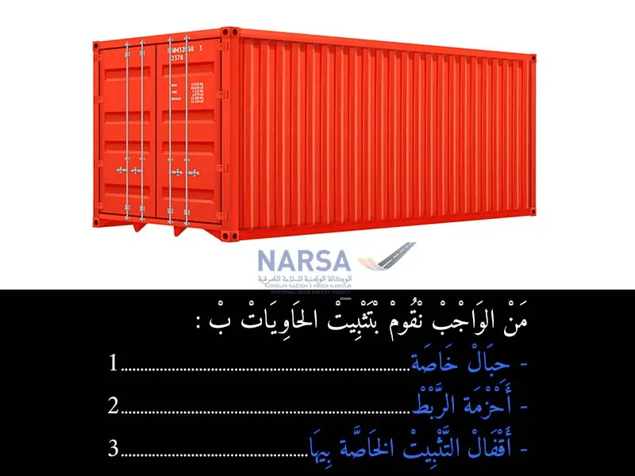
بيّن الجواب
الجواب الصحيح: 3
تثبيت الحاويات بشكل صحيح أمر حيوي للسلامة على الطرقات وفي النقل البحري والسككي. أي خطأ في التثبيت يمكن أن يؤدي إلى سقوط الحاوية، مما قد يسبب حوادث خطيرة، خسائر بشرية ومادية فادحة. لذلك، يجب التأكد دائمًا من استخدام الأدوات الصحيحة وتثبيتها بإحكام وفقًا للمعايير الدولية ومعايير السلامة المغربية. 🚚🚢🚆 السلامة أولاً! ⚠️✅
السؤال 7
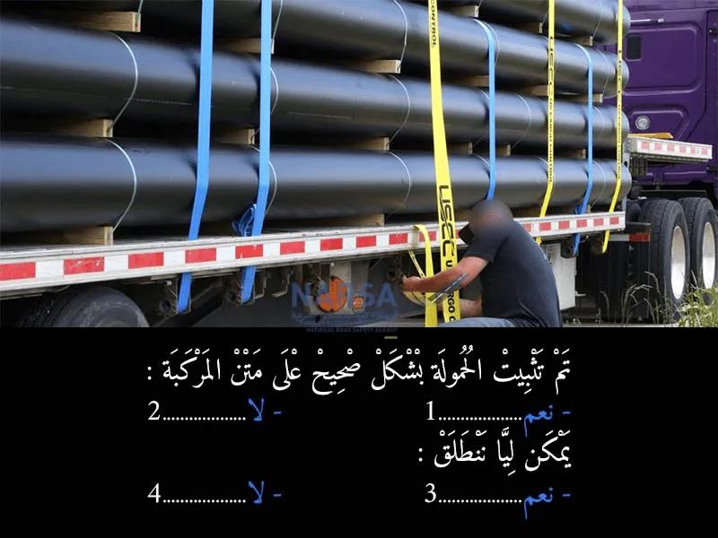
بيّن الجواب
الجواب الصحيح: 1 و 3
تم تثبيت الحمولة بشكل صحيح على متن المركبة: نعم. ✅ (من الواضح في الصورة أن الأنابيب الكبيرة مثبتة بأحزمة ربط قوية ومتعددة، ويبدو أن الشخص يقوم بشدها بإحكام. هذا يقلل بشكل كبير من خطر تحرك الحمولة.)
يمكن ليا ننطلق: نعم. ✅ (بما أن الحمولة مثبتة بشكل صحيح وآمن، يمكن للمركبة الانطلاق بأمان، مع مراعاة السرعة المناسبة وخصائص الحمولة.)
السؤال 8
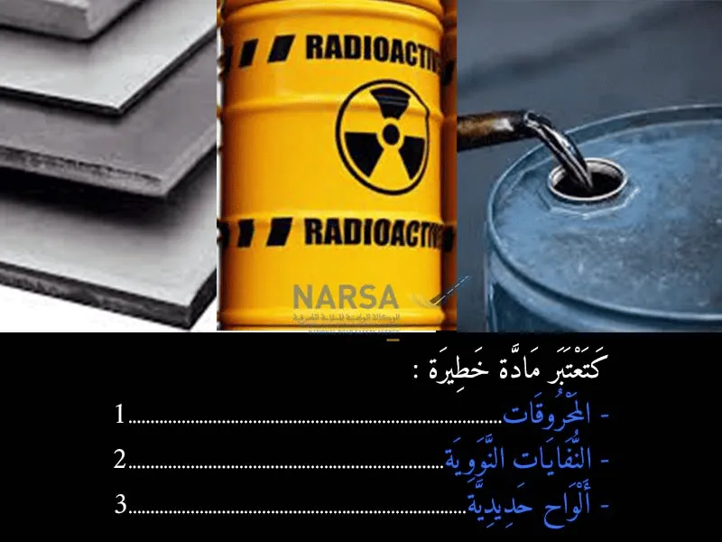
بيّن الجواب
الجواب الصحيح: 1 و 2
كل من المحروقات (البنزين، الديزل) والنفايات النووية تُعتبر مواد خطيرة ⚠.
المحروقات قابلة للاشتعال وتشكل خطر الحريق والانفجار 🚒🔥،
أما النفايات النووية فهي مواد مشعة تشكل خطرًا كبيرًا على الصحة والبيئة ☢.
أمّا ألواح الحديد فهي ليست مادة خطيرة حسب مدونة السير المغربية
السؤال 9
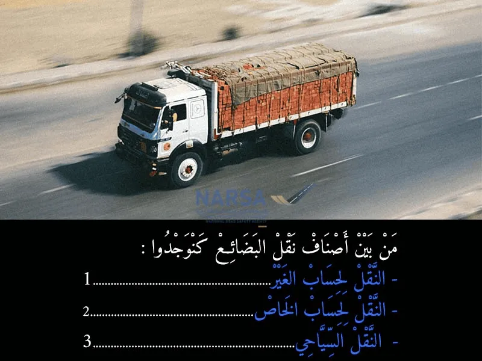
بيّن الجواب
الجواب الصحيح: 1 و 2
من بين أصناف نقل البضائع، نجد:
النقل لحساب الغير. ✅ (هذا هو النقل التجاري للبضائع، حيث تقوم شركة أو شخص بنقل بضائع مملوكة لأشخاص أو شركات أخرى مقابل أجر. 🚚💸 يتم هذا النوع من النقل بواسطة مقاولات النقل المرخص لها.)
النقل لحساب الخاص. ✅ (هذا النوع من النقل يعني أن الشركة أو الشخص يقوم بنقل بضائعه الخاصة باستخدام مركباته الخاصة، ولا يتقاضى أجرًا مقابل النقل. 📦🏢 فمثلاً، شركة تقوم بنقل منتجاتها من المصنع إلى المستودعات الخاصة بها.)
النقل السياحي. ❌ (النقل السياحي هو صنف من أصناف نقل الأشخاص، وليس نقل البضائع. 🚌👨👩👧👦 يتعلق بنقل السياح والمسافرين.)
السؤال 10
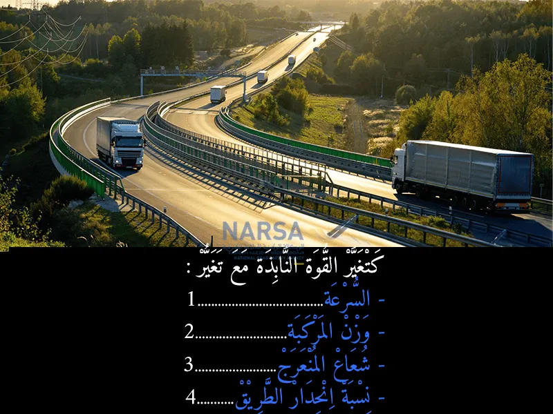
بيّن الجواب
الجواب الصحيح: 1 و 2 و 3
القوة النابذة هي القوة التي تدفع المركبة نحو الخارج عند المنعطفات، وتتغير مع تغير العوامل التالية:
السرعة. ✅ (كلما زادت سرعة المركبة في المنعرج، زادت القوة النابذة بشكل كبير جدًا. العلاقة بين السرعة والقوة النابذة تربيعية، يعني مضاعفة السرعة تضاعف القوة النابذة أربع مرات. 🚀)
وزن المركبة. ✅ (كلما زاد وزن المركبة (الحمولة)، زادت القوة النابذة المؤثرة عليها. الشاحنة المحملة تكون أكثر عرضة للانقلاب في المنعرج مقارنة بالشاحنة الفارغة بنفس السرعة. ⚖️)
شعاع المنعرج. ✅ (شعاع المنعرج هو مدى حدة المنعطف (الاستدارة). كلما كان شعاع المنعرج أصغر (أي المنعرج أكثر حدة)، زادت القوة النابذة. المنعطفات الحادة تتطلب تخفيضًا أكبر للسرعة. ↩️)
السؤال 11
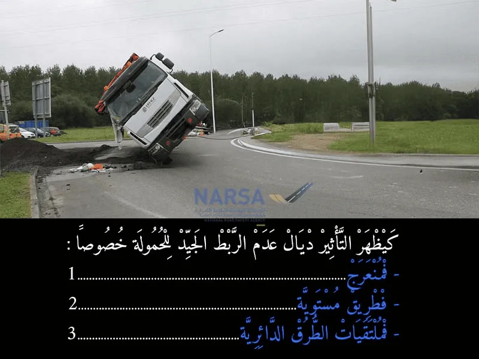
بيّن الجواب
الجواب الصحيح: 1 و 3
يظهر التأثير ديال عدم الربط الجيد للحمولة خصوصًا في:
- المنعرجات. ✅ (عند الدخول في المنعرجات، تعمل القوة النابذة (القوة الطاردة المركزية) على دفع المركبة والحمولة نحو الخارج. إذا لم تكن الحمولة مثبتة جيدًا، فإنها تتحرك أو تنزلق باتجاه خارج المنعرج، مما يغير من مركز ثقل الشاحنة ويزيد بشكل كبير من خطر فقدان السيطرة أو انقلابها. ↩️)
- ملتقيات الطرق الدائرية. ✅ (ملتقيات الطرق الدائرية (المُدارات) هي في الأساس منعرجات دائرية. وبالتالي، ينطبق عليها نفس مبدأ المنعرجات. عند الدوران في المدارة، تتعرض المركبة والقوة النابذة، مما يجعل الحمولة غير المثبتة تتحرك وتُخل بتوازن الشاحنة، كما يظهر في الصورة التي تُشير إلى انقلاب شاحنة في منعطف أو مدار. 🔄)
السؤال 12
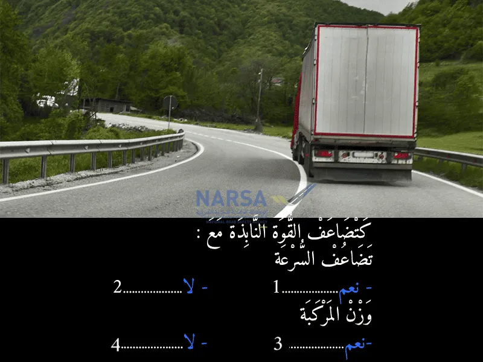
بيّن الجواب
الجواب الصحيح: 2 و 3
القوة النابذة تزداد مع تضاعف السرعة، ولكن ليس بنفس النسبة. عند مضاعفة السرعة، تتضاعف القوة النابذة أربع مرات. هذا لأن القوة النابذة تتناسب مع مربع السرعة، وليس مع السرعة نفسها.
القوة النابذة هي القوة التي تدفع المركبة نحو الخارج عند المنعطفات، وتتغير مع تغير العوامل التالية:
السرعة. ✅ (كلما زادت سرعة المركبة في المنعرج، زادت القوة النابذة بشكل كبير جدًا. العلاقة بين السرعة والقوة النابذة تربيعية، يعني مضاعفة السرعة تضاعف القوة النابذة أربع مرات. 🚀)
وزن المركبة. ✅ (كلما زاد وزن المركبة (الحمولة)، زادت القوة النابذة المؤثرة عليها. الشاحنة المحملة تكون أكثر عرضة للانقلاب في المنعرج مقارنة بالشاحنة الفارغة بنفس السرعة. ⚖️)
شعاع المنعرج. ✅ (شعاع المنعرج هو مدى حدة المنعطف (الاستدارة). كلما كان شعاع المنعرج أصغر (أي المنعرج أكثر حدة)، زادت القوة النابذة. المنعطفات الحادة تتطلب تخفيضًا أكبر للسرعة. ↩️)
السؤال 13
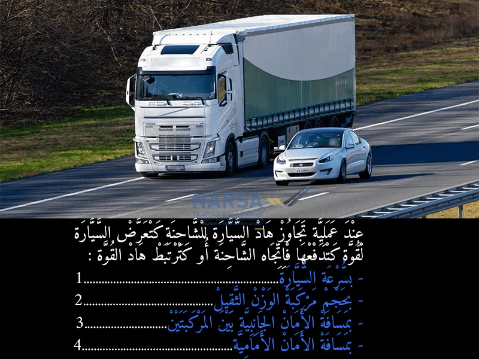
بيّن الجواب
الجواب الصحيح: 3
عند تجاوز شاحنة، السيارة كتتعرض لقوة هوائية جانبية نتيجة حركة الهواء الكبيرة اللي كتدفعها نحو الشاحنة أو تجرها بعيداً 🚗💨🛻.
هذه القوة مرتبطة بشكل مباشر بالمسافة الجانبية بين السيارة والشاحنة، كلما كانت المسافة أقل، كلما زادت القوة المؤثرة على السيارة ⚠.
لذلك، الحفاظ على مسافة أمان جانبية كافية أثناء التجاوز أمر ضروري لضمان ثبات السيارة وسلامة السائق والركاب
السؤال 14
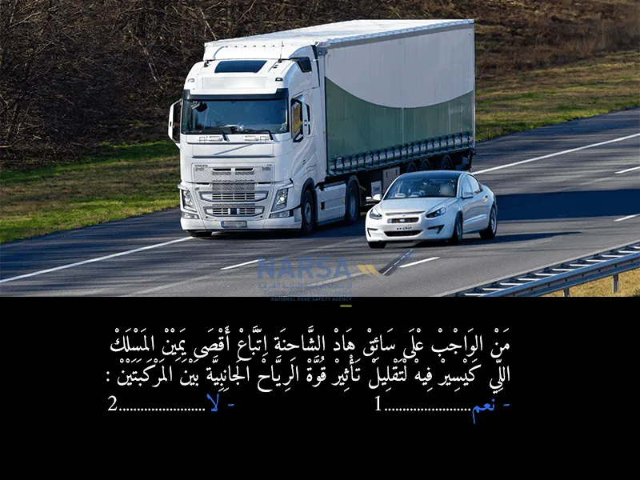
بيّن الجواب
الجواب الصحيح: 1
ذا صحيح تمامًا! 💯 عندما تمر سيارة خفيفة (مثل السيارة البيضاء في الصورة) بجانب شاحنة كبيرة (كما هو الحال في الصورة)، يمكن أن يتولد ما يسمى بـ "تأثير الرياح الجانبية" (Crosswind effect) أو "تأثير المصاحبة الهوائية". 🌬️
كيف يحدث هذا؟
تأثير الدفع الهوائي: حجم الشاحنة الكبير يدفع كمية هائلة من الهواء أمامه. عند مرور سيارة صغيرة بجانبها، يمكن أن تدفع هذه الكتلة الهوائية السيارة الصغيرة بعيدًا عن الشاحنة.
تأثير السحب: بعد تجاوز الجزء الأمامي للشاحنة، يتكون خلفها منطقة ذات ضغط هواء منخفض (فراغ جزئي)، مما قد "يسحب" السيارة الصغيرة نحو الشاحنة.
السؤال 15
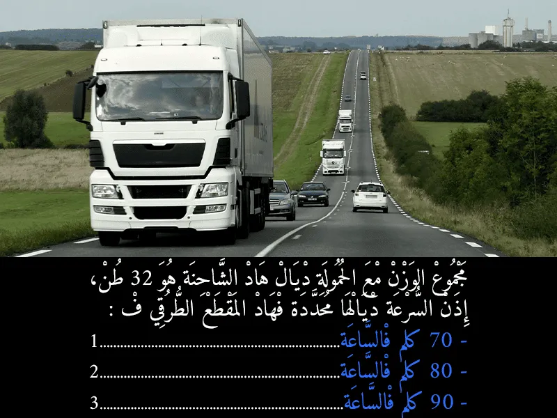
بيّن الجواب
الجواب الصحيح: 1
مجموع الوزن مع الحمولة ديال هاد الشاحنة هو 32 طن، إذن السرعة ديالها محددة فهاد المقطع الطرقي ف:
70 كلم فالساعة. ✅ (الصورة تظهر شاحنة تسير على طريق غير سيار (طريق وطنية أو جهوية)، وليس طريق سيار (أوتوروت). بالنسبة للمركبات الثقيلة التي يتجاوز وزنها الإجمالي 19 طنًا (أو مجموعات المركبات مثل الشاحنة والمقطورة) على الطرق الوطنية أو الجهوية، فإن السرعة القصوى المسموح بها هي 70 كيلومترًا في الساعة.)
السؤال 16
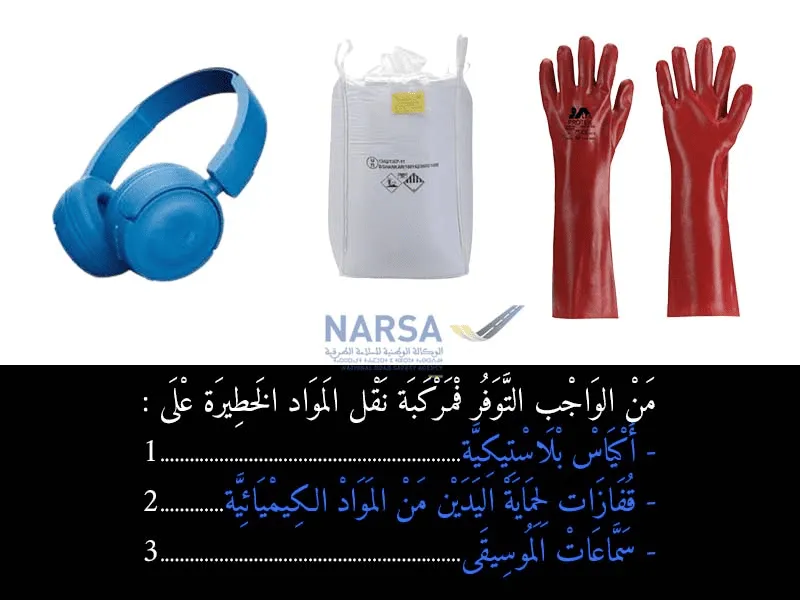
بيّن الجواب
الجواب الصحيح: 1 و 2
نقل المواد الخطرة يخضع لقواعد صارمة جدًا في المغرب (والمستمدة من الاتفاقيات الدولية مثل ADR). هذه القواعد تلزم بتوفر مجموعة من معدات السلامة والوقاية الشخصية في المركبة، بالإضافة إلى وثائق خاصة وعلامات تحذيرية.
من بين أهم المعدات الواجب توفرها:
مطفأة الحريق extinguisher 🔥
قفازات الحماية 🧤
نظارات الحماية 👓
بذلة الحماية 🧥
حذاء السلامة 👢
مصباح يدوي 🔦
سدادات الأذن (في بعض الحالات) 👂
عتلة (رافعة) لفتح الصهاريج (في بعض الحالات) 🛠️
مادة ماصة (absorbent material) للتعامل مع التسربات. 🧽
السؤال 17
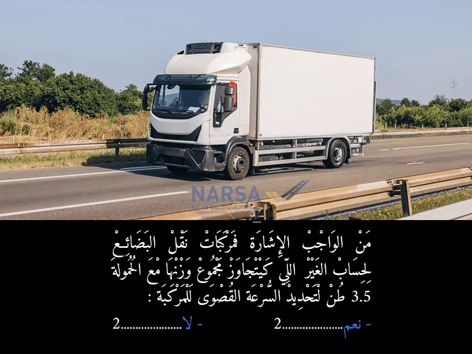
بيّن الجواب
الجواب الصحيح: 1
وفقًا لمدونة السير المغربية والقوانين المنظمة للنقل، يُلزم أصحاب وسائقي مركبات نقل البضائع (الشاحنات) التي يتجاوز وزنها الإجمالي المرخص به (PTAC) 3.5 طن، بوضع لوحات أو ملصقات تُشير إلى السرعة القصوى المسموح بها للمركبة. 🚛💨
السؤال 18
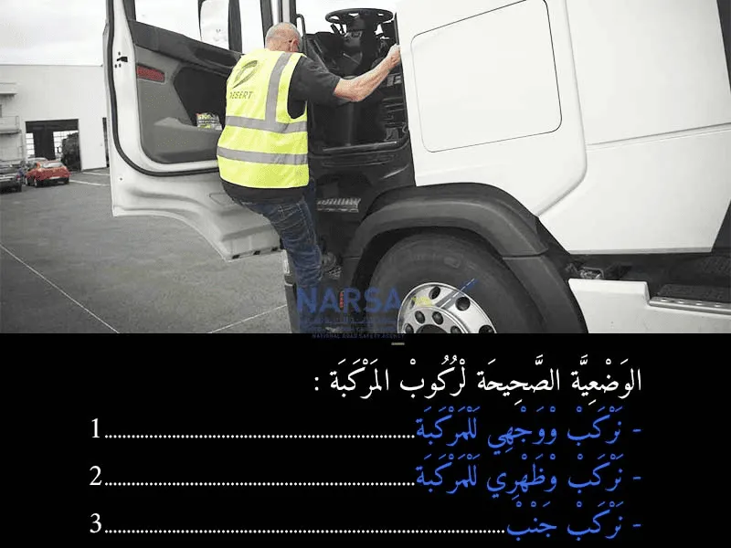
بيّن الجواب
الجواب الصحيح: 1
الجواب الصحيح حسب قواعد السلامة (التي تهدف إليها مدونة السير):
1. نركب ووجهي للمركبة ✅
شرح مختصر مع استخدام إيموجي:
عند ركوب المركبات الكبيرة مثل الشاحنات 🚚 أو النزول منها، من المهم جداً اتباع وضعية صحيحة لضمان السلامة وتجنب السقوط أو الإصابات. 🤕
الوضعية الصحيحة هي أن تواجه المركبة (وجهك نحوها)، وتستخدم المقابض (يديك) والدرجات (قدميك) بشكل متزامن. 🤝🦶 هذه الطريقة تمنحك توازناً أفضل وقبضة محكمة، مما يقلل من خطر الانزلاق أو السقوط. 🤸♂️ ركوب المركبة وظهرك إليها أو بشكل جانبي يزيد من احتمال فقدان التوازن والتعرض للخطر. ⚠️ السلامة أولاً! ✨
السؤال 19
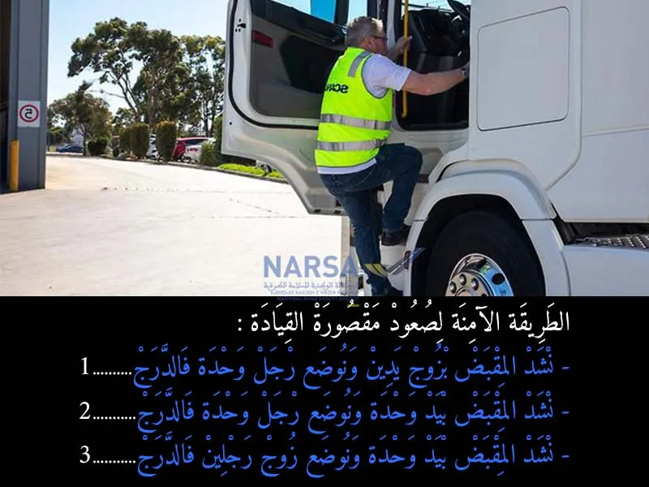
بيّن الجواب
الجواب الصحيح: 1
باش نركب في المركبة بأمان من الواجب عليا نطبق قاعدة:
قاعدة "تلاث نقط على الاقل" تعني أنه عند الصعود أو النزول من المركبة، يجب أن يكون لديك دائمًا ثلاثة أطراف (يدين وقدم، أو قدمين ويد) في تماس وتثبيت مع المركبة. 🖐️🖐️🦶 أو 🦶🦶🖐️
لذلك، الجواب الصحيح الذي يصف الطريقة الأكثر أمانًا واستقرارًا هو:
نشد المقبض بزوج يدين ونوضع رجل وحدة فالدراج ✅
نشد المقبض بيدين ونوضع زوج رجلين فالدراج ✅
السؤال 20
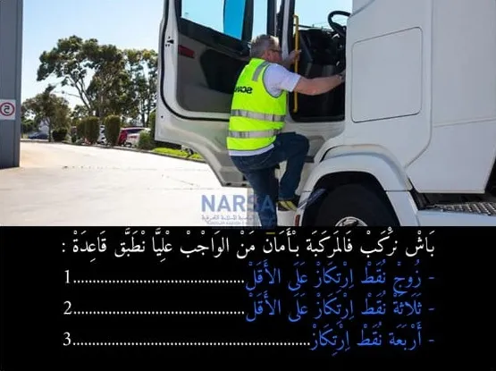
بيّن الجواب
الجواب الصحيح: 2
باش نركب في المركبة بأمان من الواجب عليا نطبق قاعدة:
قاعدة "تلاث نقط على الاقل" تعني أنه عند الصعود أو النزول من المركبة، يجب أن يكون لديك دائمًا ثلاثة أطراف (يدين وقدم، أو قدمين ويد) في تماس وتثبيت مع المركبة. 🖐️🖐️🦶 أو 🦶🦶🖐️
لذلك، الجواب الصحيح الذي يصف الطريقة الأكثر أمانًا واستقرارًا هو:
نشد المقبض بزوج يدين ونوضع رجل وحدة فالدراج ✅
نشد المقبض بيدين ونوضع زوج رجلين فالدراج ✅
السؤال 21
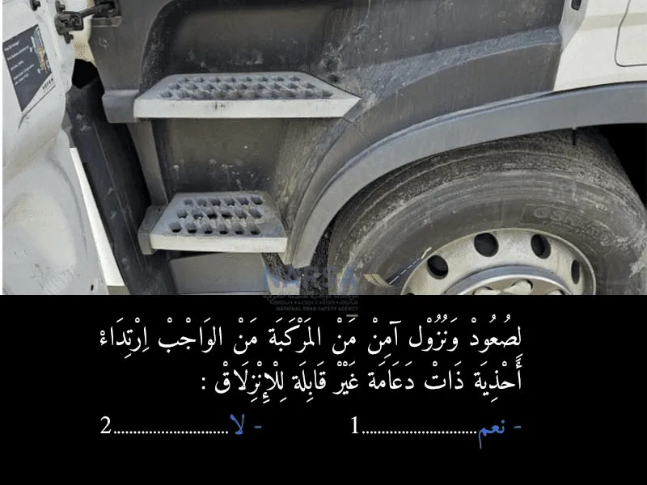
بيّن الجواب
الجواب الصحيح: 1
لصعود ونزول آمن من المركبة من الواجب إرتداء أحذية ذات دعامة غير قابلة للإنزلاق : نعم. ✅
لضمان سلامة السائقين والركاب عند الصعود أو النزول من المركبات، خاصة المركبات الثقيلة مثل الشاحنات والحافلات، أو حتى السيارات العادية في الظروف الجوية السيئة (المطر 🌧️، الثلج ❄️) أو عندما تكون الدواسات متسخة بالزيت أو الطين. 🚧